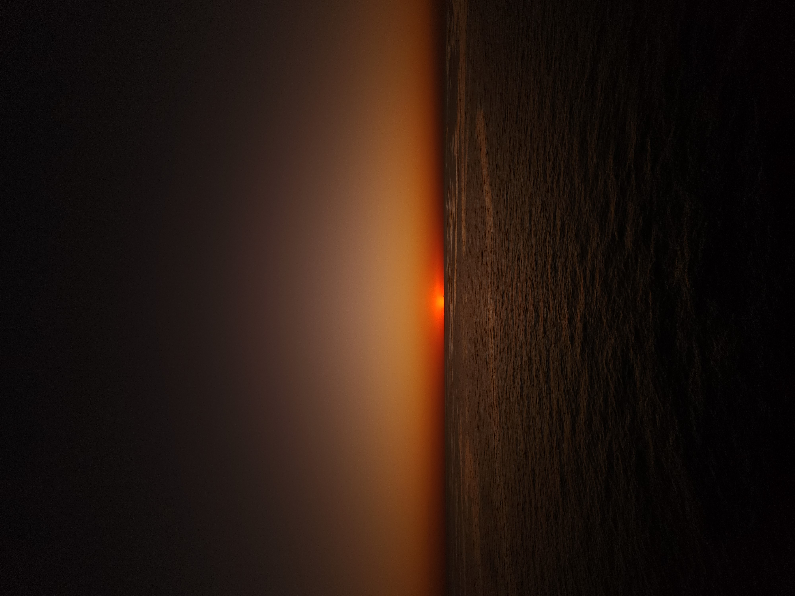

Bienvenidos a mi pagina web, aqui podran encontrar un poco de mi historia, los lugares que conoci a lo largo de mi tiempo,
los elementos que utilizo para sacar fotos, tambien cuento con un apartado exclusivamente para ustedes por si quieren contactarme
para pedirme un consejo o si necesitan una sesion de fotografia,
en el ultimo apartado de mi pagina dejo mis links a las redes sociales y tambien a whatsapp,
con un formulario para llenar para contactarme via mail, gracias
Mi pasion por la fotografia comenzo durante la cuarentena, vivo en un edificio que da de frente a los atardeceres, comence a sacarle fotos a la diferentes puestas del sol,
hasta que decidi crearme un perfil en instagram, llamado fampires08, mis amigos y familiares, apoyaron
la idea de introducirme en el ambito de la fotografia, si bien mis fotos no eran las mejores, ya que comence a realizarlas con un iphone 8 con pocas prestaciones, con el paso
cambie de celular a uno con una mejor camara, con un modo pro para regular el ISO y el WB importantes para mejorar las imagenes, hasta que tuve la oportunidad de poder comprar
una camara con prestaciones basicas para arrancar de principiante y poco a poco familiarizarme con el dispositivo

CONTACTO
Sobre cualquier consulta no dudes en mandar tu mail!!